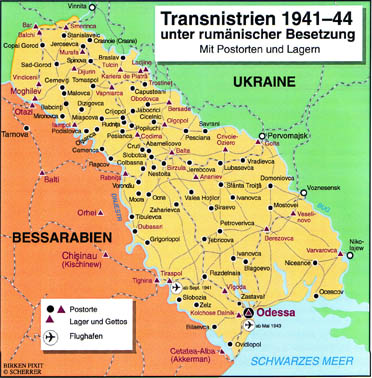
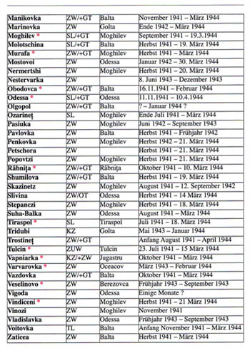

www.scherrer-rumaenien.de
Horst Scherrer, Deutschland "Die Lager- und
Unterdrückungssysteme in Rumänien von 1941 - 1944"
(Lagărele şi sistemele de oprimare în România între 1941 - 1944,
partea a doua) |

Transnistria sub ocupaţie românească, 1941-1944
Cu punctele poştale şi lagărele
